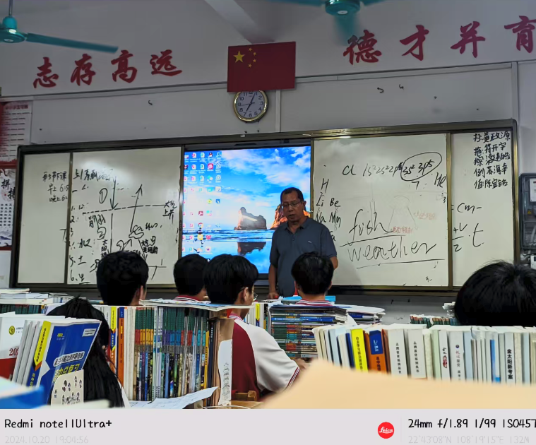
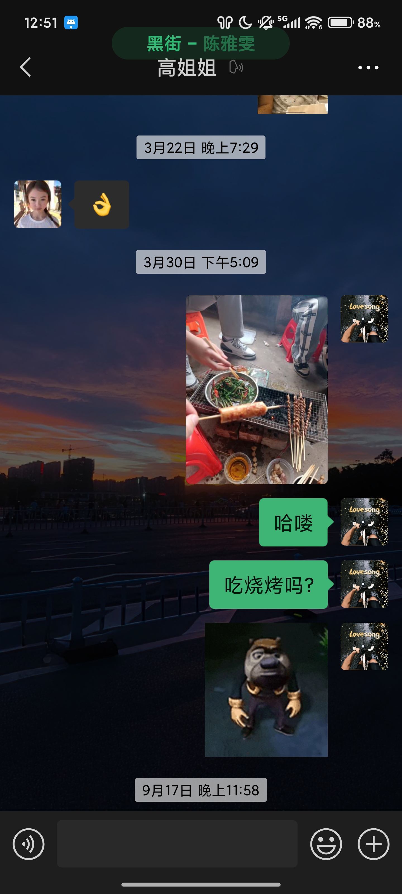
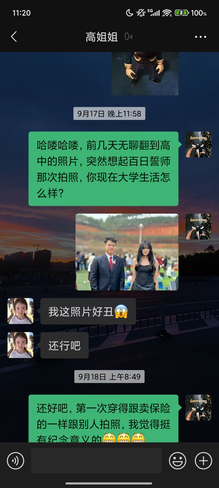

高中三年，我的座位始终在林晓的斜后方。我记得她总是扎着利落的马尾，低头做题时睫毛会轻轻颤动，记得她偏爱用浅蓝色的笔芯，记得她每次体育课跑完步会脸红着喝半瓶矿泉水。这些细碎的瞬间，像散落在时光里的星光，拼凑出我整个青春的秘密。我从不敢让她知道这份暗恋，怕打破彼此平行的轨迹，只是默默在草稿纸背面画过她的侧影，在放学路上故意放慢脚步，只为多望一眼她的背影。
十八岁成人礼那天，校园里飘着彩色气球，穿着礼服的同学们笑着合影。我攥着手机，鼓足勇气想走到林晓面前，邀她拍一张照片。可看到她正和同桌说笑，眼里满是我从未触及的明亮，脚步便钉在了原地。最终，我只能站在不远处，趁着她转身的瞬间按下快门。照片里的她站在梧桐树下，阳光落在她的发梢，笑容明媚得晃眼，而我们之间隔着拥挤的人群，隔着我不敢跨越的距离。那张存在手机里的照片，指尖划过屏幕时，竟透着一丝说不清的冰凉。
毕业后，我们各奔东西，去往不同的城市读大学。我存着她的微信，对话框却始终停留在添加好友时的系统提示。我无数次点开她的朋友圈，看着她分享的大学日常，看着她和新同学的合影，却从未敢发送一条消息。她的世界依旧热闹，而我始终是那个局外人。那张成人礼照片被我设成了私密相册，每次翻看，都像触碰着一段没有回音的时光，心里泛起淡淡的涩。
日子一天天过去，这份无果的暗恋像一根细刺，偶尔会刺痛我。我知道，不能再让这份没有回应的感情消耗自己，我需要向前走。某个深夜，我再次点开微信列表，找到那个熟悉的头像。手指在 “删除联系人” 按钮上犹豫了许久，最终还是狠下心轻轻一点。屏幕弹出确认提示时，我闭上眼，按下了 “确定”。
日子一天天过去，这份无果的暗恋像一根细刺，偶尔会刺痛我。我知道，不能再让这份没有回应的感情消耗自己，我需要向前走。某个深夜，我再次点开微信列表，找到那个熟悉的头像。手指在 “删除联系人” 按钮上犹豫了许久，最终还是狠下心轻轻一点。屏幕弹出确认提示时，我闭上眼，按下了 “确定”。
